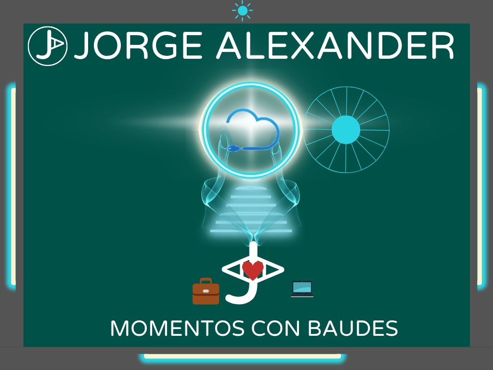
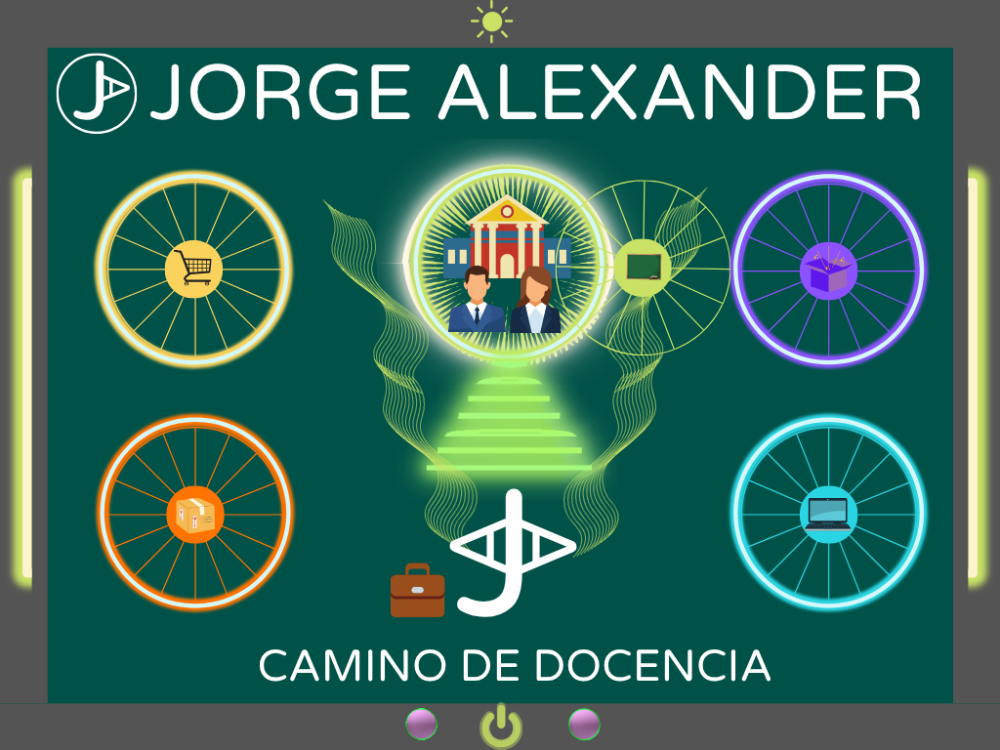

Jorge Alexander
Técnico de Sistemas
Años de Experiencia en Sistemas
Certificacion adicional Completada

Tengo experiencia base en sistemas y estoy ampliando mis conocimientos estudiando por
Pruebas Libres el Grado Superior de Desarrollo de Aplicaciones Web.
Estoy explorando y buscando mi camino en el multiverso laboral.
Sectores Profesionales
Conocimientos
Trato con el cliente y stakeholders
60 %Relación con equipo ITSM y equipos técnicos de la empresa.
Monitorización de Infraestructuras
60 %Uso básico. Herramientas usadas: Grafana, Elastic y Prometeheus.
Transferencia de ficheros Editran
60 %Nivel usuario.
Gestión de incidencias
55 %Gestión de incidencias con assets críticos. Enlace con equipos tecnicos y cliente principal siguiendo los procedimientos establecidos por el cliente.
Seguridad
55 %Accesos a infraestruras mediante baúl de NPAs y autorización a técnicos para que las usen para resolver incidencias o realizar peticiones en los assets correspondientes.
Documentación Técnica
70 %Colaboración para mejorar y mantener los procedimientos asignados a nuestro equipo con supervisión de managers.
Portfolio
- Todo
- Sistemas
- Desarrollo web
- Docencia
Sistemas
Proyecto de Cliente de Sector Bancario
Empecé desde cero con mi equipo en un proyecto que jamás pensé que iba a estar. Pude aprender mucho sobre el flujo de trabajo en un banco. A pesar de los desafíos pudimos sacar adelante todo.
Ver másSistemas
Técnico de Soporte en Ayuntamiento de Villamanta
Fue mi primera experiencia en una Administración Pública. Con ayuda de los técnicos fui aprendiendo poco a poco como gestionar las incidencias y las peticiones de los usuarios.
Ver más
Sistemas
Técnico de Soporte en Baudes Support en cliente
Empecé con prácticas y pude trabajar un tiempo de forma puntual en un cliente muy intersante: un instituto.
Ver más
Docencia
Profesor de informática básica para personas mayores
Esta experiencia me hizo sentir especial ya que no estaba acostumbrado a enseñar a nadie de forma profesional.
Ver másTítulo del Proyecto
Categoría - Categoría
Descripción
Descripción del proyecto...
Datos:
Curriculum Vitae en texto
Educación
[2024-20XX]Grado Superior de Desarrollo de Aplicaciones Web
Pruebas Libres de FP
Los módulos profesionales estudiados actualmente son los de primer curso.
[2021-2022]Certificado Profesional de Gestión de Sistemas Informáticos
Academia Lussac y Grupo Aspasia
Administración de Hardware y Software y políticas de Seguridad para garantizar el correcto funcionamiento de las infraestructuras informáticas.
[2018-2020]Grado Medio de Sistemas Microinformáticos y Redes
IES Leonardo Da Vinci - Madrid
Aplicaciones Ofimáticas y Web, Redes Locales, Sistemas Operativos Monopuesto y en Red, Seguridad Informática y Servicios en Red.
Experiencia Profesional
[2023-Actualidad]Operador de Sistemas 24 horas
Sopra Steria
Doy gracias a Sopra Steria por haberme dado la oportunidad de estar en su equipo y poder probar
herramientas que no había probado nunca.
Funciones: escalado de incidencias, monitorización de infraestructuras, peticiones a usuarios,
documentación de procedimientos.
[2022-2023]Tećnico informático
Ayuntamiento de Villamanta
Programa "Mi Primera Experiencia Profesional en las Administraciones Públicas de 1 año de duración."
Siempre estaré agradecido por haberme dado esta oportunidad.
Funciones: resolución de incidencias, asesoramiento tecnico a usuarios, mantenimiento de equipos y la
red de la casa consistorial y el resto de edificios pertenecientes; y aprovisionamiento de componentes
hardware.
[2020]Auxiliar de Soporte
Baudes Support
Fue mi primera experiencia informática en medio de una incertidumbre. Agradezco al que fue mi primer
jefe de informática por lo aprendido.
Funciones: resolución de incidencias, despliegue de imágenes de sistemas operativos, mantenimiento de
equipos y aprovisionamiento de componentes hardware.
Formación complementaria
[2023]Planificación de la Seguridad Informática en la Empresa IFCT101PO - 100H
CDM Formación
Contenidos: Debilidades, amenazas y ataques, Administración de la seguridad en redes, Tecnologías criptográficas, Sistemas de Autentificación, Redes Virtuales Privadas (VPN), firewalls; y detección y prevención automatizada de intrusiones (IDS-IPS)
[2018]Curso de Dinamización TIC - 200h
La Rueca Asociación (Tecnolab)
Contenidos: alfabetización digital, actividades grupales, gamificación, imprensión 2D y 3D; y sensibilización del efecto de la tecnología en nuestras vidas.
Certificaciones
[2024]ITIL V4 - Obtained from PeopleCert
ITIL Foundation Certificate in IT Service Management
Los módulos profesionales estudiados actualmente son los de primer curso.
Curriculums impresos
Contacto
Datos
Residencia en
Madrid, Comunidad de Madrid, España
jorgetuestalarios@gmail.com
Teléfono
+34 682 225 571
App de mensajería disponible
Whatsapp (Habilitado solo por trabajo. No se atiende mensajes relacionados con otro tipo de consultas. En ese caso escribir al correo o bien por mis redes sociales. Gracias.)
Otros datos
Disponibilidad
Escucho ofertas
Tiempo de Respuesta
Minimo 24 horas, dependiendo también del horario que tenga a lo largo de la semana por trabajar 24 horas rotativo
Portales de empleo en los que estoy
Infojobs, Tecnoempleo, Ticjob, JobToday, PrimerEmpleo